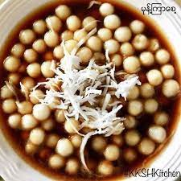

Mote Sate Chi

Description
Among desserts with sweetened soup, Mote Sate Chi is the most straightforward to make.
Chwey tiny balls with sweet cool soup could make you feel fresh in the heat of summer.
Ingredients
- Sticky rice powder
- Jaggery
- Coconut flakes (optional)
Steps
- Boil jaggery in water to get the thin paste.
- Mix the sticky rice powder with water and make tiny balls out of it.
- Cook them in the boiling water and if they float, it's ready to mix them with the jaggery paste we prepared earlier and eat.